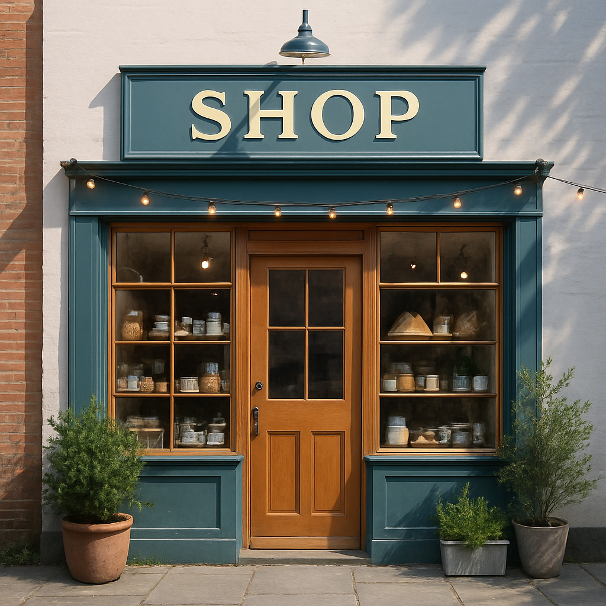

Residência Silva - São Paulo/SP
Descrição:
O cliente buscava iluminação natural sem abrir mão da privacidade.
Trabalhamos com planos cruzados, aberturas zenitais e soluções estruturais otimizadas para isso.
Destaque técnico:
Parede dupla com isolamento térmico acústico em área urbana.
(Fotos otimizadas, com legenda e boa visibilidade mobile)

Residencial unifamiliar - Rio de Janeiro/RJ
Descrição:
Terreno com aclive acentuado exigiu solução em dois níveis com platôs integrados. Volumetria moderna,
painéis de vidro amplos e telhado invertido para captação de água da chuva.
Destaque técnico:
Estratégia de ventilação cruzada passiva + paisagismo funcional

Comercial / Varejo - Minas Gerais/MG
Descrição:
Desenvolvido para expressar identidade visual da marca no espaço físico.
Fachada em brises verticais e iluminação difusa. Layout modular para permitir alterações sazonais.
Destaque técnico:
Integração total entre vitrine e provadores com iluminação cênica.

Corporativo - Bahia/BA
Descrição:
Espaço de 300 m² com foco em produtividade e bem-estar. Open space zonado com áreas de foco e colaboração.
Materiais acústicos, mobiliário ergonômico e sala de descompressão.
Destaque técnico:
Projeto em BIM para compatibilização das instalações com obra seca.